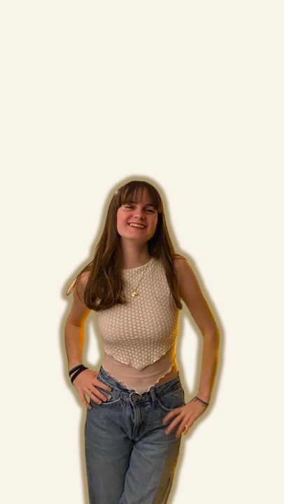

Annaëlle Le Guénic Le Gall
Actuellement en troisième année de BUT MMI (Métiers du Multimédia et de l'Internet) à l'IUT de Lannion, je suis plongée dans une formation pluridisciplinaire qui me permet d'explorer une multitude de domaines liés au multimédia. De la création graphique au développement web, en passant par l'audiovisuel et le marketing numérique, le programme m'offre une base solide de connaissances techniques et créatives. Cette diversité de compétences me permet de développer un esprit polyvalent et d'aborder des projets sous différents angles. Grâce à cette formation, je prépare mon avenir dans la communication/ marketing, avec la volonté d'appliquer ma passion dans des projets concrets et innovants.
Mon CV